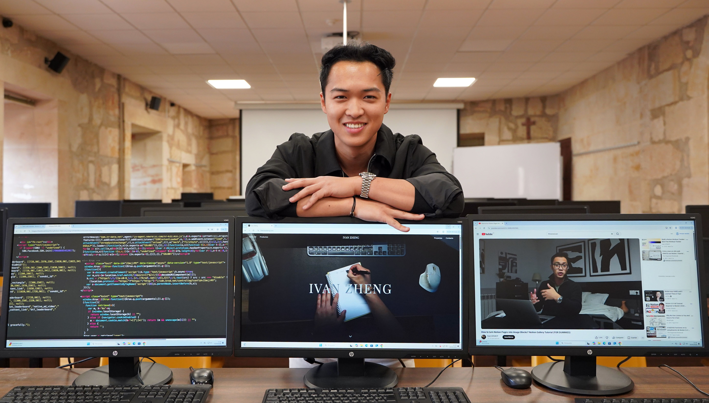
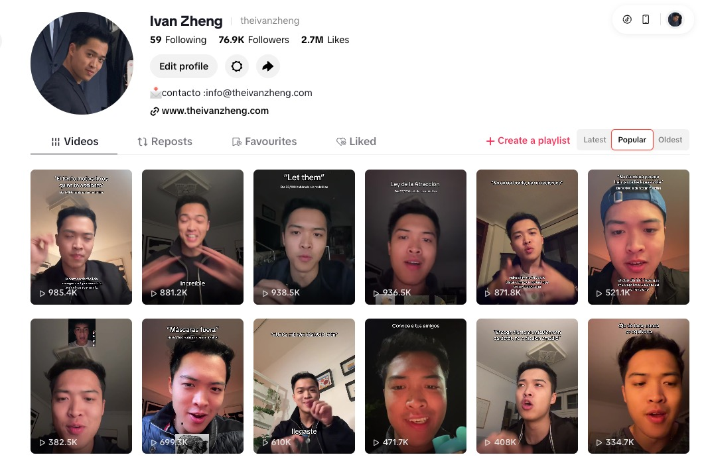
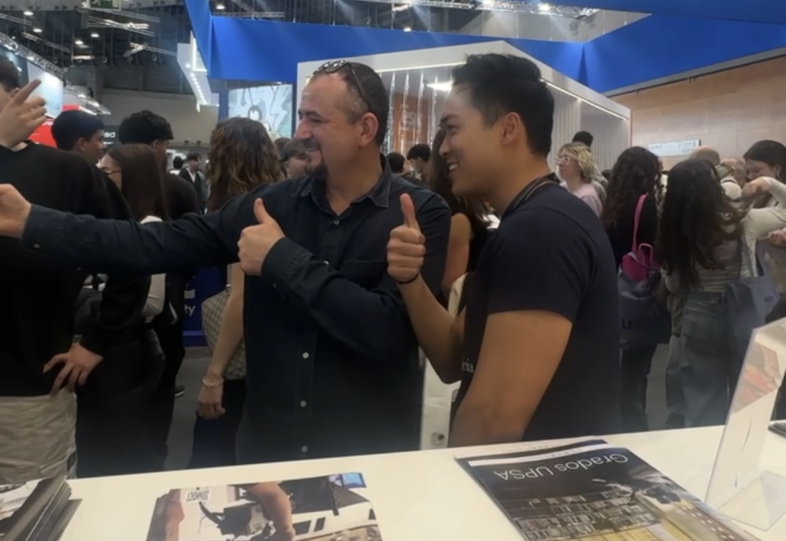
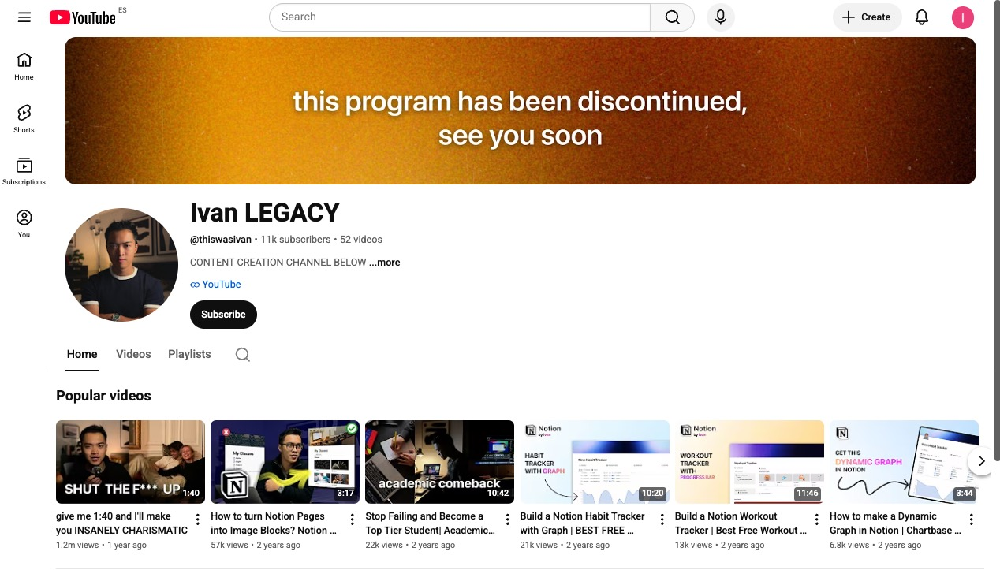
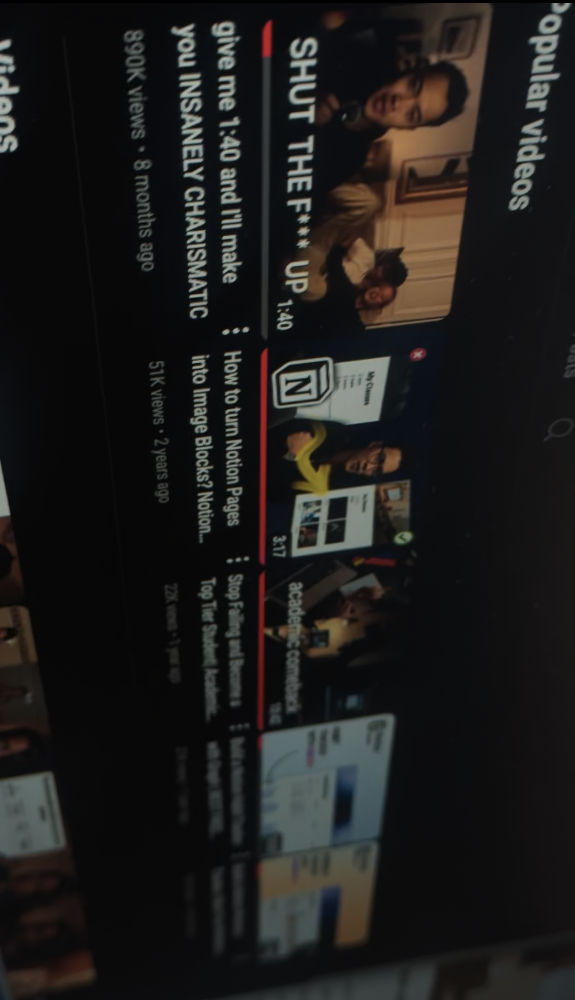

El efecto unicornio hizo que mi universidad me entrevistara →
La UPSA publicó una entrevista sobre mi trayectoria y sobre cómo combinar habilidades distintas puede convertirse en una ventaja difícil de copiar.

La UPSA publicó una entrevista sobre mi trayectoria y sobre cómo combinar habilidades distintas puede convertirse en una ventaja difícil de copiar.

Durante 100 días me obligué a hablar a cámara sin pausas ni muletillas. Empecé con cero seguidores y terminé construyendo una comunidad real.

Mi reto de 100 días hablando a cámara no solo hizo crecer mis redes. Cambió mi forma de relacionarme, trabajar y crear oportunidades.

Después de superar el millón y medio de visitas en YouTube, decidí dejar el canal para recuperar foco y dedicar energía a proyectos que sí tenían dirección.

Con la IA, crear webs y herramientas será cada vez más fácil. La diferencia estará en tener criterio, gusto y saber dirigir bien el resultado.

DebtScope nació en un hackathon de seis horas y terminó ganando el primer premio por aplicar IA al análisis de riesgo financiero.